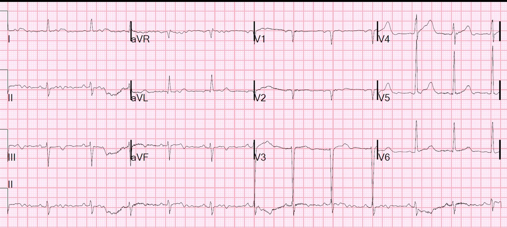
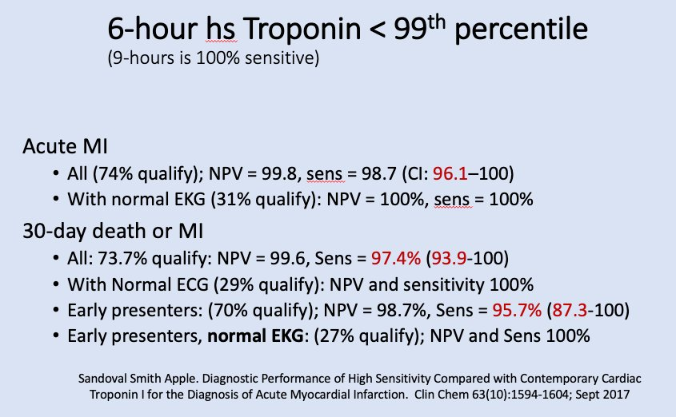
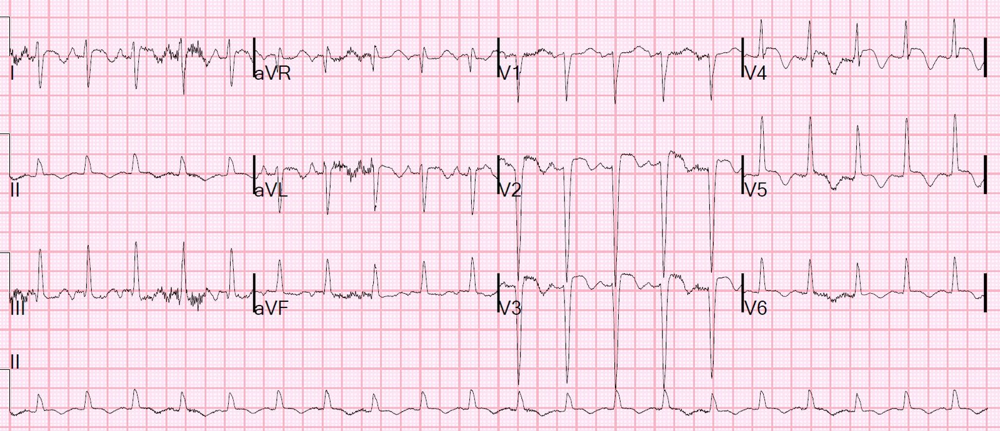
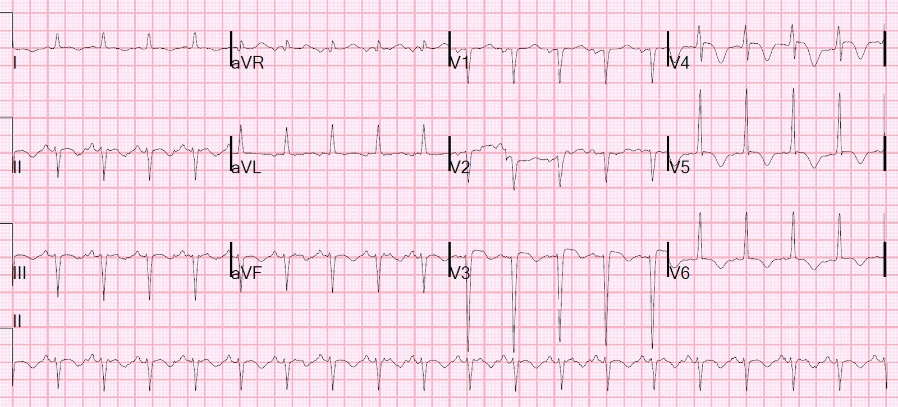
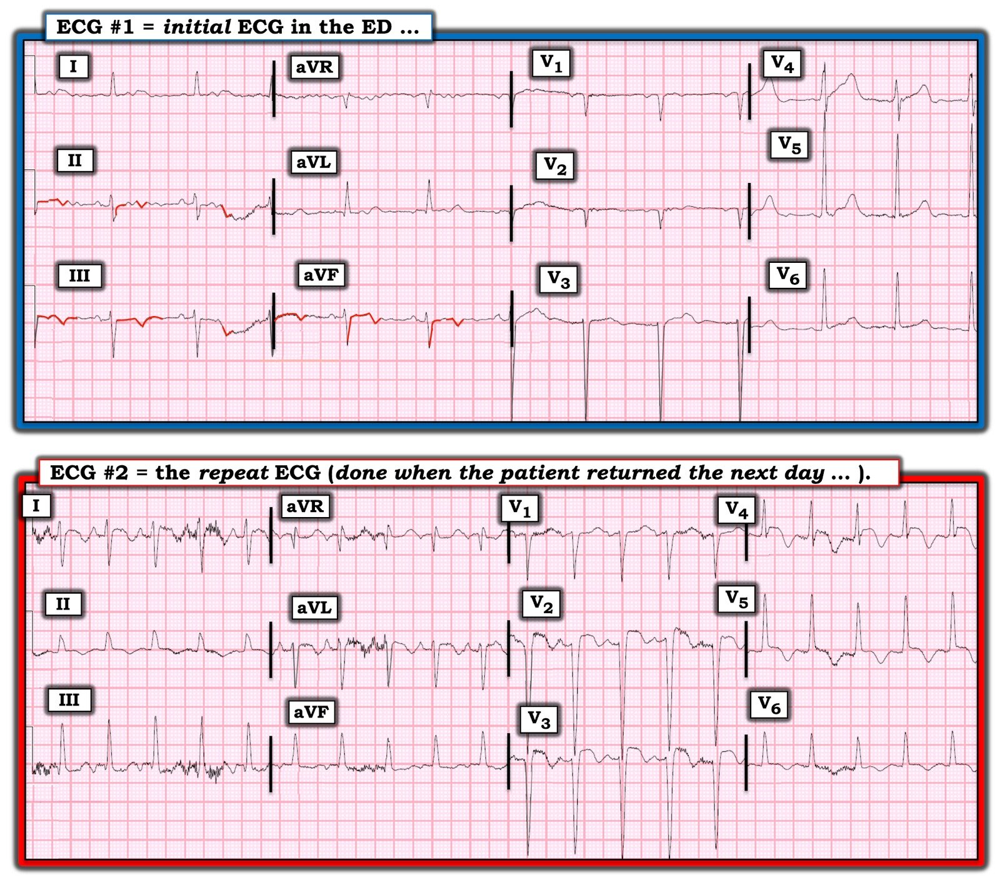
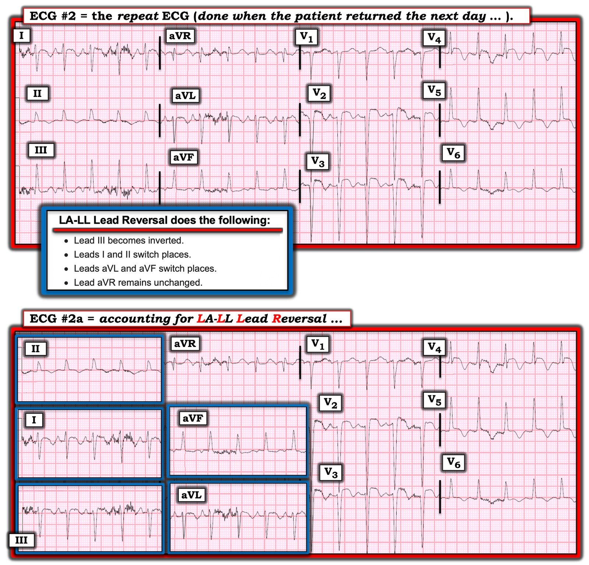
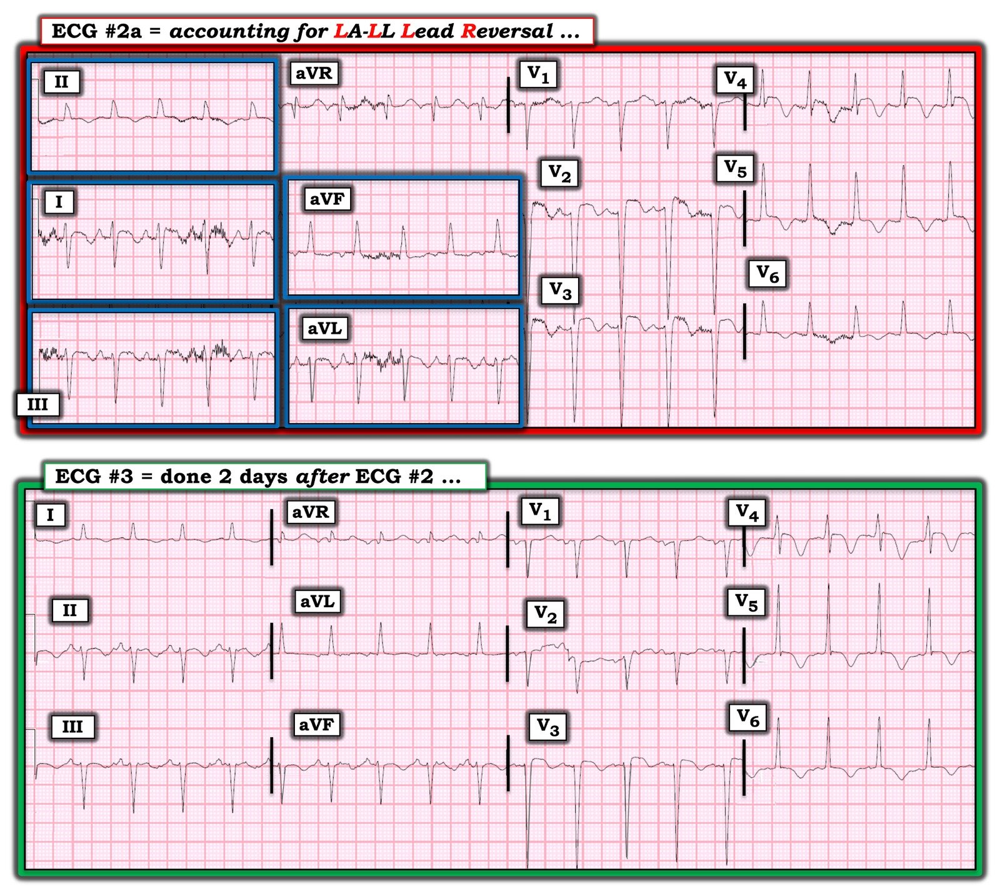

26/05/2022 — Một xét nghiệm troponin duy nhất dưới URL bách phân vị thứ 99 có loại trừ được nhồi máu cơ tim cấp nếu đau ngực kéo dài rất lâu không?
Bản dịch tiếng Việt của bài "Does a Single Troponin below the 99th percentile URL Rule out Acute MI if the Chest pain is very prolonged?" – Dr. Smith’s ECG Blog. Giữ nguyên toàn bộ 8 hình ảnh của bản gốc.
Một người đàn ông 66 tuổi đến viện vì đau ngực bắt đầu từ sáng nay khi ông thức dậy, và kéo dài suốt cả ngày khiến ông phải gọi 911. Ông cho biết cơn đau có tính chất âm ỉ, nằm ngang khắp ngực, không lan, và tăng lên khi thở ra. Ông phủ nhận đau tăng khi gắng sức hoặc khi thay đổi tư thế. Ông có khó thở (SOB) và xin được ngồi dậy. Ông nói chuyện này chưa từng xảy ra với ông trước đây. Ông có ho khạc đờm vàng. Ông phủ nhận phù. Phủ nhận tiền sử thuyên tắc huyết khối tĩnh mạch. Ông có tiền sử hút thuốc 50 gói-năm. Ông phủ nhận bị bệnh gần đây hay tiếp xúc gần đây với người bệnh. Ông phủ nhận sốt, vã mồ hôi, ớn lạnh, đau đầu, chóng mặt, choáng váng.
Đây là điện tâm đồ của ông tại khoa cấp cứu (ED):


Nhiễu. Có thể có LVH. Không có bằng chứng rõ ràng của nhồi máu cơ tim do tắc (OMI), thiếu máu cục bộ hay tái tưới máu.
Nếu bệnh nhân này có cơn đau ngắn rồi hết, người ta có thể diễn giải sóng T đảo ngược ở các chuyển đạo dưới là tái tưới máu.
Tuy nhiên, khi cơn đau liên tục suốt 12 giờ và dai dẳng, người ta phải diễn giải chúng là hoàn toàn không có giá trị chẩn đoán.
Và nếu troponin không tăng, điều đó sẽ chứng minh rằng chúng không phải do thiếu máu cục bộ.
Tôi đã khám bệnh nhân này và theo bệnh sử tôi khai thác được, cơn đau của ông đã có mặt và liên tục trong 12-36 giờ.
Chúng tôi đã làm siêu âm tim tại giường ở khoa cấp cứu, kết quả bình thường.
Sau khi một xét nghiệm troponin duy nhất trả về “âm tính” ở mức 8 ng/L (giới hạn trên tham chiếu (URL) = 34 ng/L; giới hạn phát hiện (LoD) = 4 ng/L), tôi tin rằng chúng tôi đã loại trừ nhồi máu cơ tim.
Đây là phần Đánh giá
- Công thức máu, sinh hóa và D-dimer đều không có gì đáng chú ý
- Điện tâm đồ không có dấu hiệu thiếu máu cục bộ
- Siêu âm tim trong giới hạn bình thường
- X-quang ngực cho thấy mờ kẽ ở góc sườn hoành sau, kèm xẹp phổi hoặc thâm nhiễm. Không có bất thường xương rõ rệt.
- Đã cho khí dung albuterol, có cải thiện.
Nhận định: Viêm phế quản và viêm phổi
Điều trị hen và viêm phổi
Cho về nhà sau một xét nghiệm troponin “âm tính” duy nhất?
Có dữ liệu nào ủng hộ việc cho bệnh nhân về nhà sau cơn đau ngực liên tục kéo dài, điện tâm đồ không có dấu hiệu thiếu máu cục bộ, và một xét nghiệm troponin I Abbott Architect duy nhất có giá trị ≥ 5 ng/L nhưng dưới URL (34 ng/L ở nam và 16 ng/L ở nữ), là mức cần thiết để chẩn đoán nhồi máu cơ tim không?
Chỉ có một nghiên cứu mà tôi biết đã đề cập đến vấn đề này, và tôi đã công bố nó cách đây 18 năm (xem bên dưới). Quả thật có những nghiên cứu về việc cho về sau một xét nghiệm troponin duy nhất và điểm HEART thấp, nhưng chúng không đạt được độ nhạy đủ để tỷ lệ bỏ sót nhồi máu cơ tim dưới 1%.
–Thang điểm HEART của bệnh nhân này là 3, vì vậy ông đủ điều kiện cho về theo các phác đồ như vậy.
–Thang điểm EDACS của ông là 14, với điện tâm đồ không có dấu hiệu thiếu máu cục bộ, vì vậy ông đủ điều kiện cho về nếu có 2 xét nghiệm troponin dưới URL.
Với cơn đau liên tục kéo dài 12 giờ trước khi đến viện, một xét nghiệm troponin duy nhất lẽ ra là đủ, nhưng ngoài nghiên cứu 18 năm trước của tôi (một lần nữa, xem bên dưới), không có dữ liệu nào mà tôi biết.
Mặt khác, chúng tôi và những người khác đã chứng minh rằng, nếu một bệnh nhân đến viện vì đau ngực cấp và có một mẫu troponin được lấy lúc 6 giờ (và đặc biệt là 12 giờ) sau khi đến viện mà dưới URL 99%, thì nhồi máu cơ tim cấp được loại trừ với độ nhạy cao (xem slide bên dưới).
Vì điều này đã được biết rõ, chúng tôi thường ngoại suy dữ liệu này và áp dụng nó cho những bệnh nhân đến viện với cơn đau kéo dài, và chúng tôi thường xuyên cho những bệnh nhân như vậy về nếu một xét nghiệm troponin ban đầu duy nhất dưới URL và điện tâm đồ không có dấu hiệu thiếu máu cục bộ. Chúng tôi không phải lúc nào cũng làm xét nghiệm troponin lần 2. Tất nhiên điều này còn tùy thuộc vào tính chất triệu chứng và các yếu tố nguy cơ của bệnh nhân.
Cho về với điểm nguy cơ thấp và 2 xét nghiệm troponin dưới URL chắc chắn là an toàn (giá trị tiên đoán âm (NPV) ≥ 99% đối với cả nhồi máu cơ tim cấp lẫn biến cố bất lợi trong 30 ngày), theo nghiên cứu này và theo nhiều nghiên cứu khác: https://www.sciencedirect.com/science/article/abs/pii/S019606441731867X
Smith SW. Tibbles C. Apple FS. Outcome of low risk patients discharged home after a normal cardiac troponin I. (Kết cục của bệnh nhân nguy cơ thấp được cho về nhà sau troponin I tim bình thường.) Được công bố cách đây 18 năm, dựa trên một xét nghiệm troponin có độ nhạy rất thấp, nhưng có rất ít biến cố bất lợi.


Ca bệnh tiếp diễn
Ngày hôm sau:
Bệnh nhân quay lại trong tình trạng suy hô hấp và sốc tim!
Điện tâm đồ:


Tôi diễn giải đây là tắc LAD bán cấp.
Nói cách khác:
Có vẻ như tôi đã cho về nhà một bệnh nhân bị đau thắt ngực không ổn định và nó đã tiến triển thành STEMI/OMI thành trước cấp!!
Ông phải đặt nội khí quản.
Phòng thông tim (cath lab) đã được kích hoạt.
Chúng tôi làm siêu âm tại giường: Phân suất tống máu thất trái có vẻ: giảm nặng so với chức năng thất trái hôm qua trên siêu âm tại giường (POCUS) ở khoa cấp cứu
Xét nghiệm troponin đầu tiên trả về ở mức 4000 ng/L, phù hợp với OMI bán cấp.
Tôi rất bối rối và lo lắng.
Chụp mạch vành:
Bình thường
Chẩn đoán: Takotsubo, có lẽ do viêm phổi.
Vậy hoàn toàn không phải là hội chứng vành cấp (ACS). Tôi đã không cho một ca ACS về nhà. Phù!
Siêu âm tim chính thức ngày 3:
Thất trái giãn nhẹ với chức năng tâm thu giảm nặng. Phân suất tống máu ước tính 21%.
Giảm động nặng đến vô động ở vùng giữa và mỏm thất trái ở tất cả các phân đoạn, chức năng được bảo tồn tốt nhất ở thành dưới-bên đoạn đáy.
Điện tâm đồ ngày 4:


Lúc này có sóng T đảo ngược
Ngày 6
Siêu âm tim hồi phục với EF 45%
Những điểm cần học:
1. Takotsubo giả tắc LAD
2. Ngoài ra, tôi không chắc chắn! Chỉ có thể nói rằng ca này không phải là phản ví dụ cho việc cho về nhà một bệnh nhân đã đau ngực 12 giờ trước khi đến viện và có một xét nghiệm troponin duy nhất đo được nhưng dưới URL.

===================================
BÌNH LUẬN của KEN GRAUER, MD (27/5/2022):
===================================
Một ca bệnh thú vị — với câu hỏi lâm sàng quan trọng được đặt ra là một giá trị troponin duy nhất có thể hiệu quả đến mức nào trong việc loại trừ nhồi máu khi đau ngực kéo dài. Vì mục đích thảo luận học thuật — tôi tập trung bình luận vào một vài khía cạnh cụ thể liên quan đến các điện tâm đồ trong ca hôm nay.
- Để rõ ràng, trong Hình 1 — tôi trình bày lại 2 bản ghi đầu tiên trong ca hôm nay.
Về điện tâm đồ #1:
Điện tâm đồ ban đầu tại khoa cấp cứu rõ ràng không cho thấy bằng chứng của OMI cấp (nhồi máu cơ tim do tắc – Occlusion-based MI). Dù vậy, trong bối cảnh một người đàn ông 66 tuổi có bệnh sử đau ngực dai dẳng trong 12 đến 36 giờ trước đó — tôi nghĩ có một số dấu hiệu đáng lưu ý trên điện tâm đồ #1:
- Có rất nhiều nhiễu, đặc biệt ở các chuyển đạo chi.
- Nhịp trên điện tâm đồ #1 là nhịp xoang. Trục lệch trái, phù hợp với LAHB (blốc phân nhánh trái trước – Left Anterior HemiBlock).
- Biên độ QRS ở một số chuyển đạo ngực tăng đáng kể — phù hợp với tiêu chuẩn điện thế của LVH (dựa trên sóng S rất sâu ở V3 >25 mm — và sóng R cao ở V5).
- Mặc dù khó đánh giá vì nhiễu ở các chuyển đạo chi — sóng T có vẻ âm ở cả 3 chuyển đạo dưới (khoanh viền ĐỎ ở các chuyển đạo này). Liệu đây là đáp ứng với việc QRS chủ yếu âm ở các chuyển đạo này — hay nó phản ánh một phần thiếu máu cục bộ thì không chắc chắn từ hình ảnh bị nhiễu làm hỏng này.
- Thấy phức bộ QS ở các chuyển đạo V1 và V2 — và ở chuyển đạo V3 chỉ thấy không hơn một sóng r rất nhỏ. Liệu tăng tiến sóng R kém này là hậu quả của LAHB (vốn tạo ra các lực hướng ra sau không bị đối kháng ở phần đầu) — hay — hậu quả của LVH (có thể tạo ra các lực hướng ra sau nổi trội kèm mất biên độ sóng r ở phía trước) — hay — nhồi máu thành trước vào một thời điểm nào đó — là không chắc chắn từ một bản ghi duy nhất này.
- Tôi thấy hơi bất thường khi sóng ST-T ở các chuyển đạo V1,V2,V3 gần như dẹt — đặc biệt khi xét đến LVH có thể có, vốn thường tạo ra sóng ST-T dương rõ (nếu không muốn nói là hơi chênh lên) ở các chuyển đạo trước, như một biểu hiện của “tăng gánh” thất trái khi có sóng S sâu ở các chuyển đạo trước. Liệu đây có thể là giả bình thường hóa?
- XIN NHẤN MẠNH: Điện tâm đồ #1 ban đầu này không gợi ý OMI cấp. Nhưng ở một người đàn ông 66 tuổi có các yếu tố nguy cơ và bệnh sử đáng lo ngại — tôi nghĩ các dấu hiệu điện tâm đồ nêu trên đã mở ra một số câu hỏi. Xét đến tầm quan trọng của bản ghi này trong quá trình ra quyết định — và xét đến tất cả nhiễu ở các chuyển đạo chi — tôi sẽ ghi lại điện tâm đồ.
Hãy NHÌN LẠI điện tâm đồ #2:
- Tại sao trục mặt phẳng trán trên điện tâm đồ #2 lại khác đến vậy so với ngày hôm trước trên điện tâm đồ #1?


TRẢ LỜI:
Lý do trục mặt phẳng trán trên điện tâm đồ #2 khác nhiều đến vậy so với trục trên điện tâm đồ #1 — là vì có đảo điện cực LA-LL (LA-LL Lead Reversal) trên điện tâm đồ #2! Để rõ ràng, trong Hình 2 — tôi trình bày các chuyển đạo chi của điện tâm đồ #2 lẽ ra trông như thế nào nếu các điện cực chi được đặt đúng.
- “Manh mối” gợi ý đảo điện cực LA-LL trên điện tâm đồ #2 — là sóng P ở chuyển đạo I rõ ràng lớn hơn sóng P ở chuyển đạo II (và điều đó rất bất thường khi có nhịp xoang).
- “Manh mối” khác cho thấy có điều gì đó không ổn — là trục lệch phải rõ rệt trên điện tâm đồ #2, bản thân điều này đã bất thường nếu không trong bối cảnh RVH. So sánh từng chuyển đạo giữa điện tâm đồ #1 và điện tâm đồ #2 cho thấy sự chuyển dịch đột ngột từ trục lệch trái — sang trục lệch phải chỉ trong vòng 1 ngày. Điều đó hiếm khi xảy ra.
- T.B. (P.S.) — Trong bài đăng ngày 28 tháng Bảy năm 2020 trên Dr. Smith’s ECG Blog — tôi đã dẫn nguồn tham khảo trực tuyến “tra cứu nhanh” (Quick GO-TO) mà tôi yêu thích nhất về các kiểu đặt sai vị trí điện cực thường gặp nhất, đến từ LITFL ( = Life-In-The-Fast-Lane). Chỉ cần gõ “LITFL Lead Reversal” vào thanh Tìm kiếm — và đường link sẽ hiện ra ngay lập tức!
Và NẾU chúng ta tính đến việc Chỉnh lại vị trí điện cực trên điện tâm đồ #2:
Lưu ý điện tâm đồ #2a trong Hình 2 — lúc này cho thấy: i) Trục lệch trái trở lại (LAHB); ii) Sóng P xoang ở chuyển đạo II cao hơn sóng P ở chuyển đạo I (như lẽ ra phải thế khi có nhịp xoang); và, iii) ST dạng vòm (coving) và sóng T đảo ngược ở các chuyển đạo dưới (thay vì các chuyển đạo bên cao).


So sánh Cuối cùng — giữa điện tâm đồ #2a và điện tâm đồ #3:
Hãy dùng phiên bản đã chỉnh của điện tâm đồ #2 ( = điện tâm đồ #2a) — giờ đây mọi thứ hợp lý hơn khi chúng ta so sánh 2 bản ghi cuối cùng trong ca hôm nay (Hình 3):
- Không có khác biệt đáng kể về tần số tim hay trục mặt phẳng trán giữa điện tâm đồ #2a và điện tâm đồ #3.
- Có thể có thay đổi nhẹ về vị trí đặt điện cực ngực (tức là, sóng S ở chuyển đạo V2 sâu hơn nhiều trên điện tâm đồ #2a so với điện tâm đồ #3). Dù vậy — khác biệt này khó có thể làm thay đổi đánh giá tổng thể của chúng ta về 2 bản ghi này.
- “Hình dạng” tổng thể của sóng ST-T tương tự nhau ở hầu hết các chuyển đạo — với khác biệt chính là có phần cải thiện trên điện tâm đồ #3, được ghi 2 ngày sau điện tâm đồ #2a.
Theo Dr. Smith — chẩn đoán cuối cùng giải thích cho những thay đổi điện tâm đồ rõ rệt bắt đầu từ điện tâm đồ thứ 2 trong ca hôm nay là bệnh cơ tim Takotsubo. Các dấu hiệu phù hợp với chẩn đoán này (thấy trong Hình 3) gồm nhịp nhanh xoang — QT dài — bất thường sóng ST-T lan tỏa không khu trú theo giải phẫu.
- Để ôn lại các dấu hiệu điện tâm đồ gặp trong bệnh cơ tim Takotsubo — Xin xem Bình luận của tôi ở cuối trang trong bài đăng ngày 25 tháng Ba năm 2020 trên Dr. Smiths Blog.

